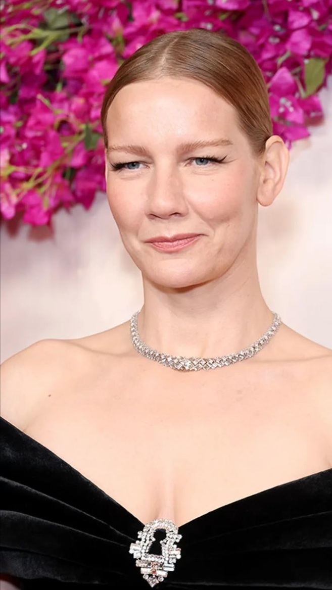
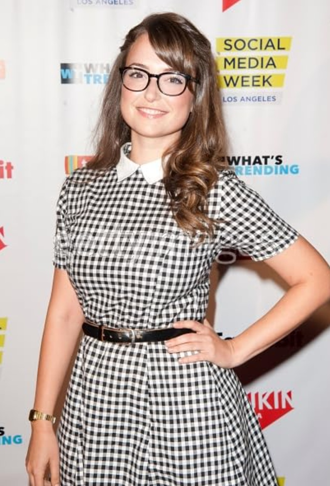
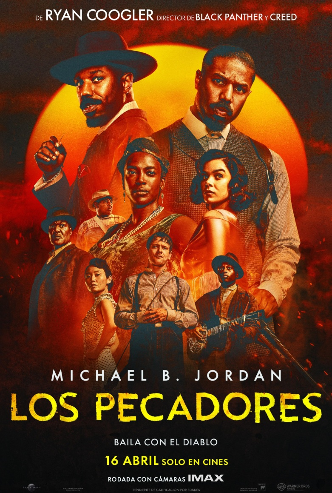
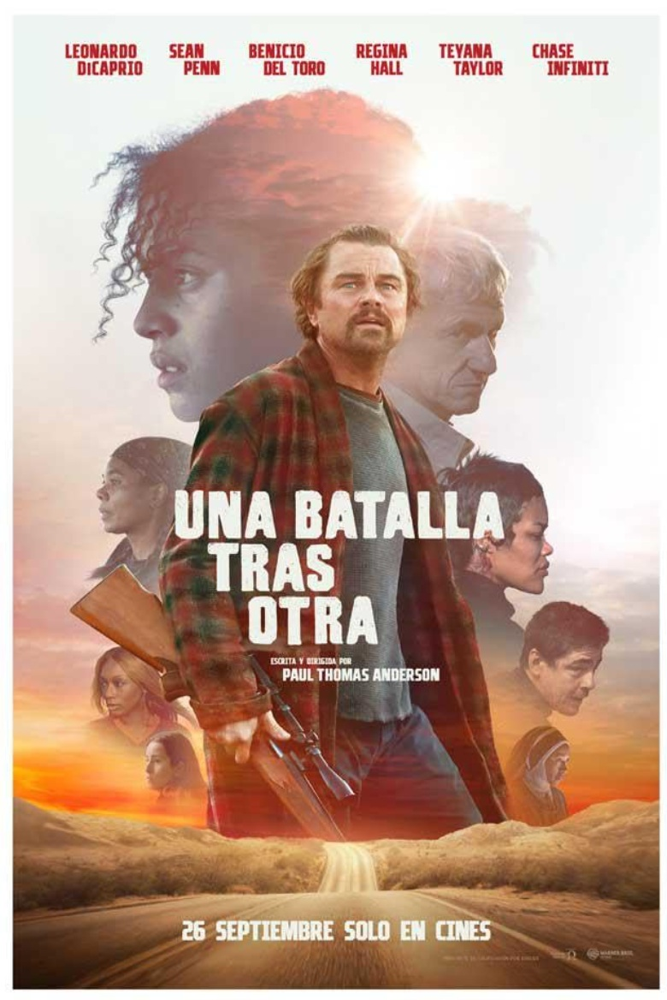
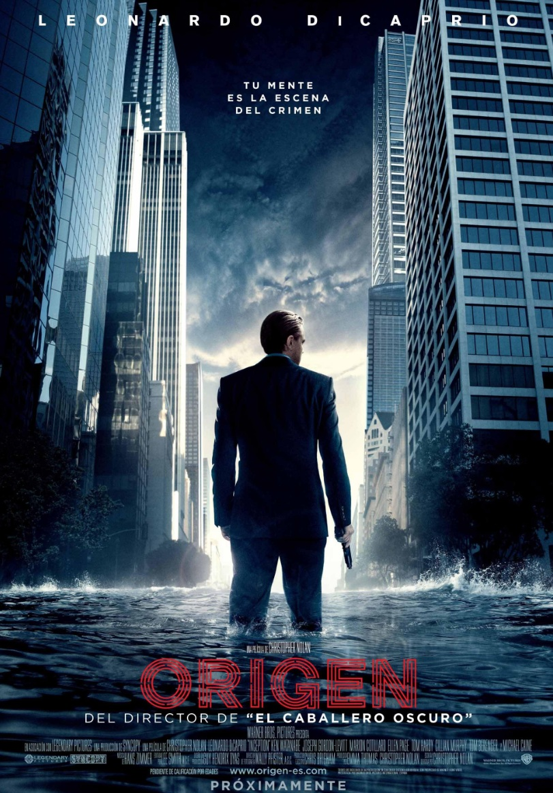
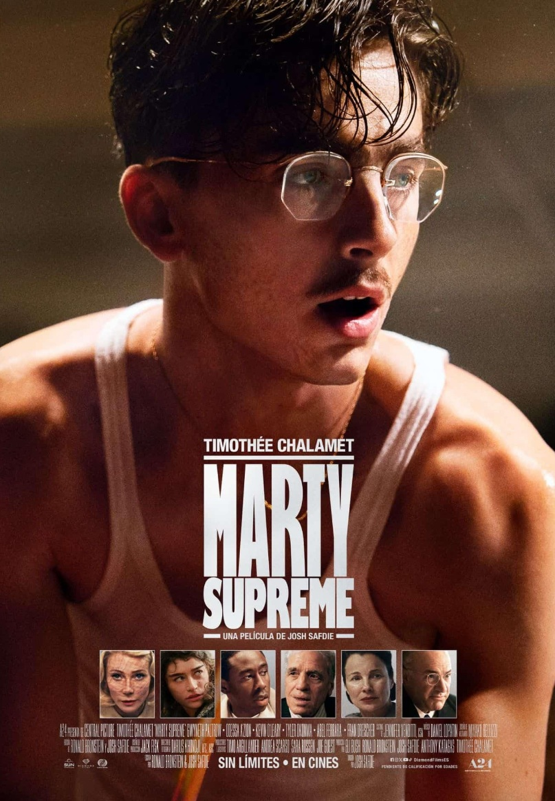
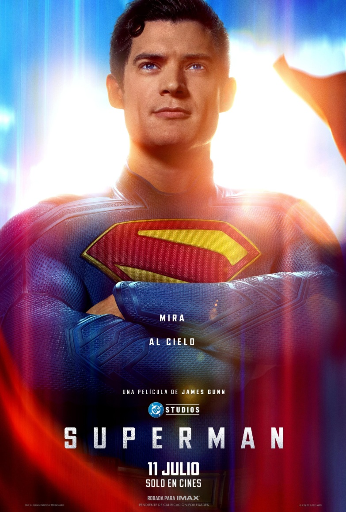

PROYECTO SALVACIÓN
Un astronauta intenta salvar la Tierra desde su nave en el espacio exterior.
- Género: Aventuras
- Año: 2026
- Duración: 2h 36min
- Director: Phil Lord, Christopher Miller
- Productores/as: Nikki Baida, Sarah Esberg, Drew Goddard
- Calificación general: 8.2/10
- Clasificación por edad: +13
- Plataformas: Amazon
Tráiler
REPARTO
RYAN GOSLING

SANDRA HÜLLER
JAMES ORTIZ
LIONEL BOYCE

MILANA VAYNTRUB
RESEÑAS DESTACADAS
Calificación: 9.0 / 10

MorfenZ dice:
La humanidad necesita este tipo de películas
"Project Hail Mary es el tipo de película que te recuerda por qué amas el cine. Hace mucho que no sentía emociones tan encontradas al ver una película: felicidad, tristeza, amor, esperanza—todo está ahí. Me metí completamente a ciegas. No vi ningún tráiler; Solo sabía que Ryan Gosling protagonizaba y que estaba dirigida por Phil Lord y Christopher Miller, y eso por sí solo me hizo creer que sería algo especial. Y realmente fue algo especial. La dirección es fantástica, los visuales son preciosos y la música es enorme: se funde perfectamente con la escritura y la historia. Todo funciona junto para crear algo cálido, emotivo e increíblemente humano."
Calificación: 9.0 / 10
4170123W dice:
La ciencia nunca me habia parecido tan saludable
"Nunca pensé que estaría tan emocionalmente involucrado con un "tío flotante" y una "roca andante", pero aquí estamos. Visualmente, es impresionante, y la música y la banda sonora son increíbles, pero el corazón de la historia es lo que realmente me impactó. Lo pasé por todo. Riendo, llorando y, sinceramente, sintiéndome muy estresado por ellos. ¡Sciene nunca se había sentido tan sana! Increíble. Increíble. Increíble."
Calificación: 5.0 / 10
ultraultra dice:
Demasiado largo y infantil
"Esperaba que esta película tuviera un tono más serio, pero cada escena está diseñada con algún final ligeramente cómico. No es realmente gracioso, solo un poco meh. La película también es muy predecible, ineficaz para crear cualquier nivel de suspense y está llena de demasiadas escenas innecesarias que aumentan su tono ligero."
Calificación: 4.0 / 10
Tweetienator dice:
Proyecto Braindead
"Sobrevalorado al máximo. Solo si te gusta Grogu y crees que es una incorporación genial al universo de Star Wars esta serie podría ser justo para ti, y si E. T. sigue siendo tu película favorita de todos los tiempos... Para mí, Project Hail Mary es en su mayoría aburrido, y los problemas lógicos son tan grandes como la Vía Láctea —y más allá. En fin, puede que funcione bien con los niños, así que si no tienes mejores ideas, puedes pasar un rato en familia con él. Pero el tiempo de calidad es otra cosa, en mi opinión. En fin, la producción es sólida, Gosling también."
Calificación: 10.0 / 10
Scottzee dice:
Una obra maestra que mezcla Arrival, Interstellar y The Martian
"Vi una proyección previa al estreno en Dolby Cinema. Fue increíble. Aunque tuvo que simplificar gran parte de la ciencia del libro, esta es una de las mejores adaptaciones que uno podría esperar. La impresionante fotografía de Greig Fraser y la fantástica interpretación de Ryan Gosling lo consolidan como uno de los grandes de la ciencia ficción."
RELACIONADOS

LOS PESCADORES
Calificación: 7.5/10
DURACION: 2h 17min

UNA BATALLA TRAS OTRA
Calificación: 7.7/10
DURACION: 2h 41min

ORIGEN
Calificación: 8.8/10
DURACION: 2h 28min

MARTY SUPREME
Calificación: 7.7/10
DURACION: 2h 29min
